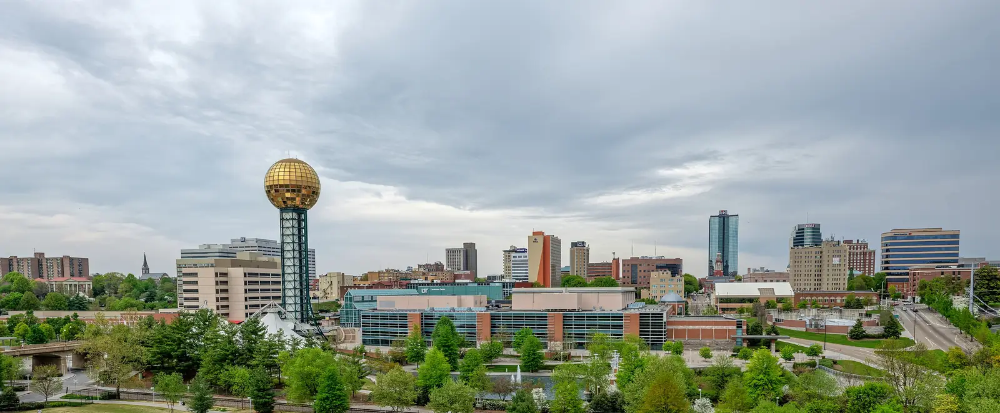

Knoxville, TN
Roofers for every Knoxville neighborhood
Knoxville has 1910s houses with steep roofs and three layers of shingles, and 1990s subdivisions on their first replacement. Inside city limits, every re-roof also needs a permit. Here's what that means for your house.

- Free drone inspection. Photos you keep either way.
- Written, line-by-line prices. No number scribbled on a card.
- The owner writes every estimate. Ryan Dix, Knoxville.
- Text a photo, get an answer. Same number as the phone.
- Crestone started in Colorado in 2018. Run here by Ryan Dix, who lives in Knoxville.
Knoxville at a glance
- 190,740 people at the 2020 census, the third-largest city in Tennessee.
- West: Sequoyah Hills, West Hills, Bearden, Cedar Bluff, Rocky Hill. South: Island Home Park, Lindbergh Forest, Vestal.
- Central: Fourth and Gill, Old City, Fort Sanders. North: Old North Knoxville, Fountain City.
- Humid subtropical climate, with a 1991 to 2020 normal of 51.93 inches of rain a year.
Source: Wikipedia, Knoxville, read October 20, 2026, unless noted.
The city permit, in full
Inside Knoxville city limits, a re-roof needs a building permit from the City of Knoxville Plans Review and Permits office (permits.knoxvilletn.gov), and an inspection after tear-off. The only exemption is an overlay, where a second layer goes over a first layer that's intact. We tear off, so we pull the permit on every city job and you'll see the permit card on site.
Outside city limits the rules change: Farragut has its own town office, and unincorporated Knox County runs through Knox County Codes Administration. Each area page covers its own.
Older houses, steeper roofs
Fourth and Gill and Old North Knoxville are full of older homes with steep roofs, and many of them have two or three layers of shingles on them. All of it comes off, and the decking underneath usually needs some boards. Both are city historic districts. There, a new roof needs approval from the city's historic zoning staff first, called a certificate of appropriateness. We check before we price and build that step into the schedule.
Rain, heat and algae
Fifty-two inches of rain a year and humid summers are hard on a roof. The black streaks on north-facing slopes in West Hills and Bearden are algae: mostly cosmetic, but a reason to choose an algae-resistant shingle at replacement. Summer storms lift older shingles and bruise slopes you can't see from the street. Knox County saw hail up to 1.5 inches on September 4, 2025 (WBIR) and an EF-2 tornado on August 7, 2023 (National Weather Service, Morristown).
What we'd do on a Knoxville roof
- A free drone inspection of every slope, with photos you keep.
- A written price, line by line, with the city permit on it.
- Tear-off to the deck, so the permit inspector and you both see the wood.
- A magnet sweep of the yard and the street in front of the house.
Common questions
Is the drone inspection really free?
Yes. There's no charge and nothing to sign. We fly your roof, take close-up photos of every slope, and go through them with you. The photos are yours whether you hire us or not. If your roof is in good shape, we'll tell you that and leave.
After a storm, should I call my insurance company or a roofer first?
We'd get a free inspection first. It tells you whether there's damage worth a claim before anything goes on your record. If there is, you file the claim with your insurer (it's your claim) and we'll document the damage, write the scope, and meet the adjuster on the roof with you. If there isn't, you've lost nothing but an hour.
Which areas do you cover?
Knoxville and the towns around it: Farragut, Hardin Valley, Karns, Powell, Oak Ridge, Maryville, Lenoir City, Sevierville and Seymour. That covers parts of Knox, Blount, Loudon, Anderson and Sevier counties. If you're just outside that list, text us your address and we'll tell you honestly whether we can get to you.
Do you pull the permit?
Yes. Inside Knoxville city limits a re-roof needs a city building permit and an inspection after tear-off. Farragut, Maryville, Oak Ridge and the counties set their own rules. In Farragut, for example, the town says a plain re-roof usually doesn't need a permit. We check the rule for your address, and when a permit is needed, we pull it and you'll see the permit card on the job.
Why are there black streaks on my roof?
That's almost always algae. Knoxville averages about 52 inches of rain a year and stays humid all summer, and algae grows on the shady, north-facing slopes. It's mostly cosmetic and doesn't usually mean the roof is failing. Pressure washing can strip granules and shorten the roof's life, so don't. When you replace, an algae-resistant shingle keeps it away longer.
Get a free look at your Knoxville roof
Tell us where the roof is in Knoxville. We'll call you back to set the time.
Rather talk? Call (865) 830-8126. Rather text? Send a photo.